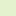

Temperaturna ljestvica [°C]
| 0°C - 1°C | |
| 1°C - 2°C | |
| 2°C - 3°C | |
| 3°C - 4°C | |
| 4°C - 5°C | |
| 5°C - 6°C | |
| 6°C - 7°C | |
| 7°C - 8°C | |
| 8°C - 9°C | |
| 9°C - 10°C | |
| 10°C - 11°C | |
| 11°C - 12°C | |
| 12°C - 13°C | |
| 13°C - 14°C | |
| 14°C - 15°C | |
| 15°C - 16°C | |
| 16°C - 17°C | |
| 17°C - 18°C | |
| 18°C - 19°C | |
 | 19°C - 20°C |
| 20°C - 21°C | |
| 21°C - 22°C | |
| 22°C - 23°C | |
| 23°C - 24°C | |
| 24°C - 25°C | |
| 25°C - 26°C | |
| 26°C - 27°C | |
 | 27°C - 28°C |
| 28°C - 29°C | |
| 29°C - 30°C | |
| 30°C - 31°C | |
| 31°C - 32°C | |
| 32°C - 33°C | |
| 33°C - 34°C | |
| 34°C - 35°C | |
| 35°C - 36°C | |
| 36°C - 37°C | |
| 37°C - 38°C | |
| 38°C - 39°C | |
| 39°C - 40°C | |
| 40°C - 41°C | |
| 41°C - 42°C | |
| 42°C - 43°C | |
| 43°C - 44°C | |
| 44°C - 45°C | |
| 45°C - 46°C | |
| 46°C - 47°C | |
| 47°C - 48°C | |
| 48°C - 49°C | |
| 49°C - 50°C |